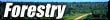
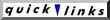
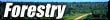
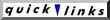

A |
B |
C |
D |
E
F |
G |
H |
I |
J |
K
L |
M |
N |
O |
P
Q |
R |
S |
T |
U
V |
W |
X |
Y |
Z
|
|
A| B | C| D |E | F | G | H | I | J | K | L | M | N | O | P | Q | R | S | T | U | V | W | X | Y | Z
dbh
-
The diameter of a tree at breast height (defined as 1.4 m above the ground).
Deciduous
-
Falling off or being shed at the end of the growing period or season. Usually describing trees that lose their leaves each autumn.
Decomposer
-
A heterotrophic organism (including bacteria and fungi) that breaks down the complex compounds of dead protoplasm, absorbs some decomposition products, and releases substances usable by consumers.
Defect
-
That portion of the tree or log which is unusable for the intended purpose. Defects include such things as rot, cavities, and excessive limbs.
Defoliation
- The removal of leaves or needles from plants.
Dendrochronology
-
The study of tree growth rings in order to establish dates, environmental conditions, and influences on growth in the past.
Dendrology
-
The study of the identification and classification of
trees.
Diameter-Limit Cutting
- Removal of all merchantable trees
above a specified minimum diameter, which in mixed stands may
vary with species.
Diameter:
-
- diameter breast height (dbh) The stem diameter of
a tree measured at breast height (1.3 m above ground level). Unless
otherwise stated, applies to the outside bark dimension.
- diameter inside bark (dib) The diameter of a tree
or log excluding double bark thickness.
- diameter outside bark (dob) The diameter of a tree
or log including bark.
- diameter over stubs (dos) The outer diameter of the
knotty core in pruned trees.
- diameter stump height (dsh) The stem diameter of a
tree measured at stump height.
Dieback
-
(Of a plant) To die from the top or peripheral parts.
Direct Seeding
- see Seeding: direct
Disease
- Harmful deviation from normal functioning of
physiological processes, generally pathogenic or environmental
in origin.
Dominant Crowns
- The uppermost branches of trees that can reach above their neighbours to get the most sunlight.
Dominant Species
-
Most numerous and vigorous species in a mixed crop.
Dominant Thinning
- see Thinning: selection
Drainage
-
- Hydrology/engineering: The process of
removal of water from soil, particularly by surface run-off and
subsurface percolation and artificially by measures for hastening
removal, e.g., by ditching.
- Pedology: The frequency and duration of the periods when the soil is free of saturation or partial saturation. A measurable characteristic (including
rapidity and extent) but generally assessed from profile morphology,
e.g., greying and colour, and landform. Commonly described in
terms of subjective drainage classes, extending from very poorly
drained to excessively drained.
Duff
-
The litter and partly decomposed organic layer on forest soils.
Dysgenic
- Detrimental to the genetic quality of a population.
|
|